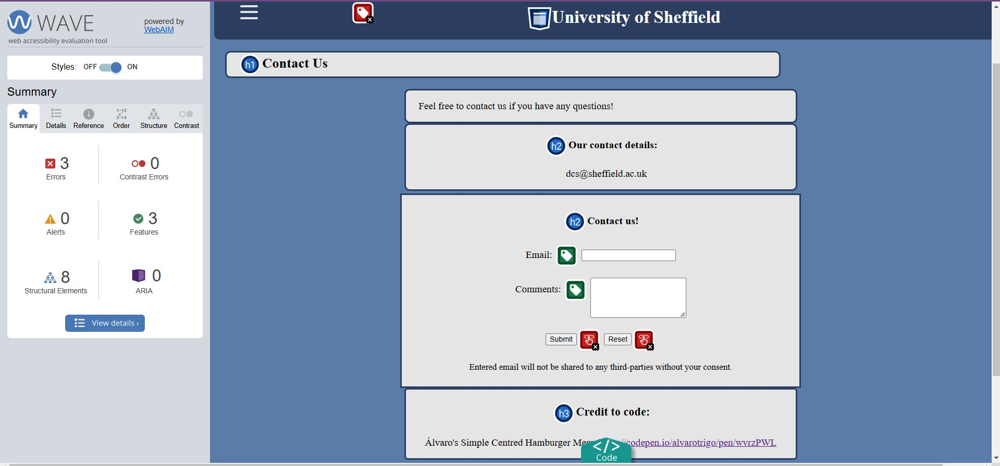

References:
Álvaro (no date) Simple Centred Hamburger Menu [https://codepen.io/alvarotrigo/pen/wvrzPWL] (Accessed: 12 November 2024)
To ensure the website loads fast, the images are jpg, which is lossy compression, reducing the file size. Although this may reduce the quality of the image, it is ideal to load the webpage faster. The images are responsive, when the screen size is adjusted, the images also adjust. This avoids larger images on a small screen, increasing the webpages loading times.
The HTML and CSS validators have helped to keep the code clean, accessible and identify any errors.
The validator advised to add an attribute to decalre the language and to clean up the redundant areas of the code. Duplicate id's were being used and were unnecessary so it was removed to make things simpler. Also added headings at the start of elements such as section and articles to structure the information.
On the Contact Us page, the action in the element form had an error due to the use of the space character, so this was fixed by replacing the space with %20.
The padding, the space around the content in the element and element border, caused an error because of the use of commas. The padding order represents top, left/right, bottom.
The webpage on the monitor has a width more than 500 pixels and the mobile view has 500 pixels or less.
The width of the section and article elements increase to ensure a good use of space so the text is comfortably visible whist still maintaining structure.
The aside element on mobile moves below the section so both content can be viewed comfortably.
The images stack vertically on mobile and on the monitor, the images spread out more. This ensures the mobile version uses the space effectively whilst being able to see the images clearly.
The width of the section, form and article elements increase to ensure a good use of space so the text is comfortably visible whist still maintaining structure.
The error that appeared was there is no label on the checkbox for the hamburger menu. As this does no require a label, it can be ignored.
The alt text and figcaption are different so it gives a better description of the image. However, thi is only so the location does is not given away for the quiz.
The error that appeared was the button has no value text. The value was added, so if there are multiple of the same button, the corrcect button pressed will be identified.
Other than the checkbox, no other errors appeared, including contrast errors.
Álvaro (no date) Simple Centred Hamburger Menu [https://codepen.io/alvarotrigo/pen/wvrzPWL] (Accessed: 12 November 2024)